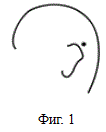
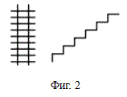
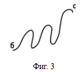
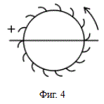
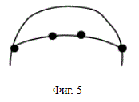
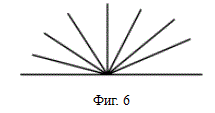

Беседа 3477 от 3877 · Беинса Дуно
Същественото
Отче наш.
Нали имате тема?
Прочете се темата: „Отличителни черти на органическия и неорганическия свят“.
Вие разглеждате работите както физическия, у духовния свят. Същественото кое е на органическия свят? Казвате, че единият свят е по-висок от другия. Единият е музикален, другият е немузикален. Че единият бъкел не може да каже, не може да пее, няма музика, другият може да пее. Всичката разлика е, че органическият свят има спомагателни органи, неорганическият няма. Неорганическият свят са диваци, органическият свят са културни хора. Вие сега искате да влезете вътре. Неорганическият свят е много организиран, съвсем не е така, както казвате неорганическият свят. Казвате: „Неорганизиран“. Най-първо органическият свят е доста зависим. Запример, в неорганическия свят нещата се разплодяват много лесно. Начупи камъните, лесна работа. Щом дойдем до органическия свят, работата е друга. Тури едно неорганическо семе не се измъща, тури едно органическо измъща се при особени условия. По-лесно се предава живота на органическите тела отколкото на неорганическите. Но и онези, които влизат в органическия свят имат доста големи пакости между тях. Какво ще кажете, тия културните хора, които имат аероплани, че пущат бомби, бият се с пушки, културни ли са? Доста голяма култура. Някои организми имат такива пушкала. Някое малко същество знае химия, като дойде противника, напръска го с отровно вещество, което отделя, после го изяда. Сега мислите, че органическите същества са много благородни, че са на висока степен, научили са се, как да служат на Бога. Кои седят по-високо? Запример, органическите същества, които имат костна система и които са безкостни? Онези безкостните имат един начин на живот, с костите имат друг начин за живот. Човек, ако е без кости не може да се направи в тази форма. Ако не би имал як материал, не би могло да се създаде тялото му. То е закон за тялото му. В органическия свят има повече удобства. Органическите вещества са по-устойчиви, по-трудолюбиви, онези неорганическите те са индивидуални, всяко живее за себе си. В органическия свят вече имате един колективитет, събират се на общества, села, градове имат. Неорганическите са чергари, които се скитат. Неорганическите са чергари, органическите живеят в села и градове. Казвам: За бъдеще има да се спират учените хора да разглеждат по този начин, по който сега се изучава. От природата изваждаме разумното. Представят природата, като че сега работи безсъзнателното. Ако попитаме един учен човек, защо главата на човек е нагоре, защото според закона на трептението, главата трябва да бъде надолу както у растенията. Виждаме, че главата е горе, а краката долу. Човек е направен по една система много неустойчива. Толкоз милиона години е трябвало човек да се учи да седи на краката си. Преди се е подигал, подигал и падал, затова е ходил на четири крака. Когато се е подигнал и се е изправил то е било голям успех, преодоляване на една голяма мъчнотия – главата да поддържа горе. Плувците, които плуват във водата, за да могат да плуват, първо трябва да се научи да държи горе главата. Плувецът, който не може да се научи да държи главата горе, той потъва.
Казваме: „Организирана воля и неорганизирана воля“. Организирана воля значи има спомагателни средства. Лостът е в организирания свят. Организираният свят си служи с лостове. Най-малките организми имат лостове, спомагателни средства, с които си служат. Под думата „организиран“ имате идеята в себе си, че човек се отделя от цялото. По-напред е бил едно с цялото и е мислил с него. В органическия свят човек се отделя от цялото, неговото съзнание се отделя от космическото съзнание, той започва като индивид, едно същество, което отделно съществува. По-напред имало общо съзнание на битието. Казвам: Всичко в живота трябва да се организира. Запример, кое в човека е неорганизирано? Главата му още не е организирана. Най-организираното вещество е, но тя има още да се организира. Човек се организира, после се разсипва неговият организъм, като че се правят проби. Имате една къща, събаряте я и пак наново я строите. Няма нещо устойчиво.
Ако вземете от окултно гледище, човек има 12 тела, които трябва да организира, от тях за 7 говорят теософите, 5-те са в неизвестност. От тези 7 само с 4 функционира човек, трите са непонятни за човека. Физическо тяло, астрално, умствено, причинно тяло. Като се развие причинното тяло, хората ще знаят причините на всички неща, защо всяко нещо става така, а не другояче. Сега не знаят защо стават нещата. Да допуснем, че вие се усещате неразположен. Неразположението ви може да произтича от храната, от стомаха ви, може да произтича от мозъка ви или вашето неразположение може да произтича от разстройството на червата или от разстройството на нервната ви система, или просто може да произтича от някакво налягане отвън, на което не сте свикнали. Сега щом имате неразположение, как се справяте с вашето неразположение? Щом се опари едно животно ближе се и така се лекува. Ближе се с езика и със слюнката си се лекува. Онези, които се опарят винаги духат, наслюнчат мястото. Понякой път имате едно неразположение, трябва да знаете от какво произтича. Сега културните хора имат неразположение. Щом нямат пари, веднага са неразположени. Сега дажбата за хляба като е малка, пак са неразположени. Като вземат да дават по 200 или 100 грама, неразположен си, не може да се нахраниш. На един американец 100 грама са достатъчни, понеже те ядат картофи, месо и много други работи. Българинът е свикнал с много хляб, доста хляб яде.
Сега ние сме поставени в един порядък неизбежен. Каквото и да се говори, природата ще възпитава човека, ще му дава изобилно, после накара го да пости, гладни години идат. Даже когато не е война в период от 100 години някой път намалява дажбата, няма плодородие и хората тогава се съобразяват. Аз зная причините. Може би преди повече от 50–60 години разправяха ми един пример. Има едно малко градче, сега е прекръстено, казваше се Козлуджа, в околността, на което сеели много царевица. Над него има села по-високо – Николаевка, Чатма, те минавали за аристократи, сеели жито. Казвали: „Царевицата е за свинете“, изкарвали най-хубавото жито. Но случило се една година и житото не става. Ражда се царевица и те трябвало да слизат, и да купуват от Козлуджа царевица, която според тях била само за свинете. Като яли нея година царевица, оттам насетне всяка година и те сеели царевица по 2–3 декара. По-напред само няколко кочана колкото да си сварят, считали за унижение да сеят царевица.


Аз често съм наблюдавал в природата тоновете са другояче кръстени. В природата когато човек изучава психологически музиката ни най-малко няма да намери „до“ или „фа“, или „ми“ или пък g, d, g /„сол“, „до“, „сол“/.
Там съвсем друго яче са обозначени нотите. Сега казвате С-дур, С-мол („до-мажор“, „до-минор“). В природата по-другояче седи. Туй е спомагателно. Аз всякога съм имал големи мъчнотии, като превеждам една песен от природата. Докато намеря в коя гама да я преведа, в С-дур във „фа“ или в друга гама. Трябва да минеш ред процедури, докато разбереш защо е „фа“, а не друга. В гръцкото пеене са нямали камертон. Всеки е вземал тоновете както е могъл. Вземе „фа“, а то е нашето „до“. Добрите певци, като че се нагаждат, имат основен тон. Основния тон, който имате, не може да го вземете, осем октави има. Не може да го вземете, основният тон е нисък, като че земята се търси. Казвате: „Основен тон“. Имате седем октави. Един човек пее три октави.

Сега, запример, някой учител ви преподава музикално геометрия. Пее и ви предава геометрия музикално. Да кажем, преподава ти музикално за правата линия. Как ще я преподаде? Казва: „Между две точки само една права линия може да се тегли“. Музикално как ще ви предаде това? Как ще го изпее? Как бихте изпяли правата линия? Правата линия е образувана от две точки. Правата линия е когато искаш да образуваш интимно отношение с едно същество, как ще го образуваш? Никога не си имал отношение, сега мислиш, как да образуваш отношението. Допуснете, че имате една приятелка или един приятел, обичаш го, музикално му говориш. Ти вземаш основния тон „до“, твоят приятел с кой тон трябва да ти отговори? С тон, който хармонира, с най-хармоничния тон на „до“ и тогава вече се образува правата линия. Тия трептения са близки. Те се съединяват, допълват се едни други. Един близък свят, те са далечни, но същевременно са и близки. Да допуснем, че твоят приятел се намира в трудно положение, има малко микроскопическо неразположение. Ти искаш да го утешиш. Какъв тон трябва да вземеш? Всякога скърбите се лекуват музикално. Ти запример, вървиш по пътя и си неразположен, че трябва да наблюдавате. Вървиш по пътя и си неразположен в умът си, не можеш да се събереш в кожата. Вървиш, удряш крака си и този удар смени неразположението ти. Чуваш този удар, това тропане на камъка като го чуеш, музикално ти подействува, сменя се състоянието. Започваш да мислиш другояче. След туй дойдеш снемеш си обущата, видиш удареното място. От кой такт е? Някъде запример ще видиш дали е ауф такт. Ще видиш нагоре-надолу как ще започнеш. В съзнанието нещата стават много хармонични. Той музикално е пял, капелмайстор ставаш, съзнаваш вече дали е ауфтакт. Или вървиш някъде, неразположен си, дойде някоя оса или нещо друго те ужили. Като бръмчи, образува един тон, жилне те и сменя се състоянието ти. Може комар да те ухапе или муха може да те ухапе. Или някой път минаваш и бръсне те някое клонче. Или дъжд вали – дъждът най-хубаво сменя неразположението. Като падат капките, като удрят, много лесно се сменя състоянието и ти придобиваш весело настроение. Всяка капка като пада чуваш гласът. Природата музикално ни говори. С дъжда ни говори музикално и с всичко ни говори музикално, тя ни учи с всички неща. Тя разбира естеството още ни изучава и има още да ни учи. Понякой път я озадачаваме с поведението си. Вземете някой път, безнадежни сте. Как се лекуват хората? Значи в безнадежието ти си изхарчил много работи, тогава хората се затварят. Трябва да се затварят не трябва да изтича. Казва му: „Ти си дал много, затвори се в себе си не давай нищо“. Обезсърченият сключи двете ръце тури ги на слънчевия възел и като седи, седи така, стане му малко приятно. Някой път ще дойде да му турят инжекция. Инжекцията не е лоша работа. Това е удряне на камък. Много по-лесно е да се излекуваш така като си туриш ръцете на слънчевия възел, отколкото да платиш 40–50 лева да ти изпитват трептенията на сърцето. Ти като туриш сключени ръцете на слънчевия възел, свърши се работата. Аз, ако съм, ще попея. Боли те сърцето, изпей му една песен. Щом изпееш веднага болката се премества. Болката е толкоз слаба, че веднага може да се смени. Музикантите може да направите опит някой път. Някои от вас, които сте музикални, като ви заболи кракът, да дойде някой да ви свири на крака. Давайте концерт на крака си, да видите, да имате една опитност. Викайте някой майстор, който знае да свири. Ако вие може да свирите, свирете вие. Или пейте, свирете, или вземете с ръката да удряте ритмично силно – слабо, силно – слабо, или силно – слабо – слабо и т.н. или слабо – силно. В това има музика.
Човек всякога трябва да се стреми да не харчи енергията си. Затуй хората предпочитат да иждивяват времето, отколкото енергията. Вие понякой път, които се интересувате, поставете някоя кокошка да си мъти пилците и 21 ден наблюдавайте. Ще се научите много музикални работи от нея. Кога излиза, кога се връща, наблюдавайте на един часовник кога напуща гнездото, кога се връща, колко седи и след туй колко пъти на деня рови, колко пъти казва „кок“. Тя ги обръща музикално като капелмайстор. Тя знае има един такт обръща ги всичките яйца за да могат да се измътят добре.
Та казвам: Като дойде една ваша мъчнотия, това яйцата, които ще измъщате. Една мъчнотия едно яйце, трябва да се измъти. Страданието е едно семе, което трябва да излезе. Мисълта трябва да вземе някаква форма. На страданието подхожда да се даде тази форма. Дойдат други страдания да облагородяват формата. Тази форма трябва да я създадат по-хармонично защото то е произведение. Вие раждате формата, да кажем, известна форма, известна мисъл. Да кажем имате известно страдание. Всички тия форми, които ги създавате пращате ги навън в света. По това ще се види какъв сте. То са произведенията. Някой от вас като стане започва да философствува, защо светът е така направен, има неразположение. Че това защо, че онова – ще образува цяло произведение. Какво е това – земеделие, индустрия или търговия? Някой път вие се сърдите – набрали сте известна енергия, тази енергия отива в природата. Хората като се разгневят, потребна е тази енергия, тя служи. Вие си служите с един чук, дигате го, но тази енергия, която се придава на камъните тя отива в природата и се употребява. Вие биете камъните, чупите ги, вземате от нея материал, но тя взема от вас енергията или пък туря умът ви на работа. Вие мислите значи как да го направите. Докато направите тази работа вие спестявате известна енергия и тя ви дава нещо и пак вземе нещо от вас. Когато се гневите, когато имате воля, черпи, когато имате любовно отношение и оттам черпи. Тя нищо не оставя да падне от онова, което излиза от вас. Всичко туй го събира в шишенца и го употребява в работа. Вие понякой път съжалявате. Тя има шишенца на съмнение или събрала известна енергия когато си се разгневил и турила едно заглавие. Трябва да се благодарите, че изобилно е дала, много си се разгневил и много си дал. Онзи, който много се е разгневил, щедър е бил. Който малко се е разгневил – скържав е бил. Понякой път нейните оценки се различават от нашите. Който много се разгневи много дава; който малко се разгневи малко дава. Тя използува едното и другото. Туй, което ние наричаме наша слабост, тя го използува и после тази страна ни я повръща на нас. Който много ѝ дал – много му дава, който малко ѝ дал – малко му дава. Малко от волята си даваш и тя малко дава; много даваш и тя много дава. Затуй казват – законът е верен – че всичко съдействува за добро. В края на краищата човек не трябва да съжалява за това, което е станало но да се учи. Когато човек се разгневи, то е пресилена работа. Че човек трябва да се поразгневи малко, то е потребно. Кое е лошото в гнева? При гнева, ако вземете „Нева сензу“ може да се излекувате. Или може с „Нева сензу“ да използувате вашия гняв да го организирате. Човек трябва да организира гнева си. Вие може да използувате на природата малко обработения материал. В сегашното положение ние само преповтаряме нещата.
Да допуснем, че някой музикално започва от „до“ повишен мотив, или понижен мотив е. Какво разбират сега музикантите под думата повишение? Казват, че има повишено настроение на духа и понижено настроение на духа. Какво е повишеното настроение на духа и пониженото настроение на духа? Нещата не ги считайте слабост. Че човек се тревожи или не, то не е слабост.


Запример, ако вземете създаването на слънчевата система тя музикално е създадена. Това са интервали от планетите до Слънцето. От Слънцето до Меркурий – един интервал, вторият интервал е до Венера, третият интервал – до Земята, четвъртият интервал е до Месечината, после до Марс, после имате интервал до Юпитер, интервал до Сатурн, Уран, Нептун. Това са музикални интервали. Ако идете на Юпитер как ще звучи музиката? Юпитерианската музика каква е? В Юпитер музиката е висока и тържествена. В Марс музиката е войнствена. На Венера музиката е много мека, като я чуеш сълзи ще ти потекат. Меркурий много хубава похапва на общо основание търговски работи. Това е до техническата страна, как е нагодена музиката, която е преведена от света на природата в нашия свят. Ще благодарим и за толкоз защото материята, в която ние живеем е доста гъста и човек трябва да създава особени условия за музиката. Хубаво тогава вземете един меркуриански тон. Той е обнадежден, той е търговец. Меркурий имаше желание, търгуваше, бързаше. Венера се спира малко, ще замисли, ще вземе тона внимателно. Изящен е Венереният тон. Всеки не може да пее. Чували ли сте някой път Венерин певец? – Децата когато плачат. Когато пее човек, той е доволен, доволен от ума си, доволен е от сърцето, доволен от тялото. Онзи, истинският музикант дава разположение на тялото, тялото си почива. То усеща музиката. Сърцето ти усеща музика и умът ти усеща. Тогава човек е в съгласие със себе си. Музиката дава разположение на мисълта, на чувствата, на действията. Всяко действие на музиката е хармонично. Някоя музика дава разположение на ума, на сърцето, не дава на тялото. Онази музика, която дава еднакво разположение на ума, на сърцето и на тялото, тя е тази музика на природата. Вземам думата природа отдето музиката е излязла, от света на хармонията.
Да кажем, ако взема един тон произволно – /Учителят каза: Не бутайте цигулката/ – ако взема един тон /Учителят пее „а, о, и, е, у“, различни тонове/ „о“, имаше един особен тон, с който можеш да се справиш с мъчнотия навсякъде крепък. /Учителят пее „а“/ – вече раница имаш на гърба си. /Учителят пее „о“/ – значи уредил си си работите. „А“ – значи натоварих се. /Учителят пее „и“./ – Откъде дойде? /Учителят пее „е“./ – Прекалил го. Често съм наблюдавал как казват „еее“. Щом дойде до „е“-то разширение има. Тонът „и“ направление дава, „а“-то е натоварен тон. Натоварен е, но съдържание има. „О“-то е оформен тон. Когато мисли човек, някой път мисли по-добре, ако идеите му са оформени или идеите му са съдържателни.
Как ще изпеете: „Красив е животът, що изпълня цялата земя“. Първата част имате, някои са писали „Красив е животът“ аз бих пял или от „долно – сол“ или от „ми“, „Що изпълва цялата земя“ – как бихте го изпели? Може ли да изпеете: „Красив е животът що изпълня цялата земя“. Ако бяхте осъдени на някое голямо наказание и ако ви кажат, че ако го изпеете, ще ви освободят, ще ви простят, щяхте да го изпеете, но сега не сте заинтересовани. Защото красивото е на чувствата, може да го изпеете щом дойдете до „до“, вие вече влизате в по-гъста материя, затуй по-мъчно се пее. Слиза в земята за работа. На „Красив е животът“ музиката е по-хубава в едни по-обширни, по-благоприятни условия. „Ще изпълня цялата земя“ слиза надолу. Я изпейте „Красив е жевотът“. /Изпяхме го/. „Красив е животът“ зависи от разположението, ако преобладава умът ще пея по един начин, ако преобладава сърцето ще пея по друг начин, ако преобладава волята ще пея по трети начин. Като влезе волята активност има. В думата „красив“ този слог „ра“ е хубав. „Кра“ – на български какво значи? Този слог „ра“ винаги означава туй, което се оформява. Винаги слогът „ра“ означава нещо оформено в човека, нещо определено. Значи и светлина. Този слог се среща във всички езици. Той значи натоварен тон в хубав смисъл. /Учителят пее „кра“/. Който не разбира ще разбере, че е крал, взел нещо. В „кра“ ти си взел нещо. Щом си взел ти си се натоварил. Тази идея, която носиш трябва да се освободиш. За да се освободиш от онова, което си взел, трябва да го обработиш, да го използуваш за себе си. /Учителят пее „кра“/. Какво искаш да кажеш психологически? Онзи, който е красив, красотата е винаги запалка, подбудителна причина стимул. Красотата стимулира за работа. То е най-хубавата подбудителна причина. В музиката красотата стимулира за пеене. На човека трябва красив тон, красива мисъл, стимулира. Красивото чувство стимулира в една права посока. Ти искаш да си помогнеш, да кажем искам да си помогна, търся тон, основния тон, но ще търся музикалните центрове накъде са. Тогава щом дойда във връзка с музикалните центрове на природата веднага вече има отзвук. Ако не бъда във връзка тонът не е определен. Щом дойда във връзка с музикалните (центрове) в природата има отглас в нея и във външната среда има отглас. /Учителят пее „кра“ с разни тонове/. В моя ум седи „кра“ – взел съм нещо от светлината, във вашият ум седи, че взел нещо без позволение. Кражбата става само в един ограничен свят. Изобщо няма кражба в Божествения свят, няма какво да крадеш. В Божествения свят кражбата е невъзможна, понеже имаш и си доволен. В един свят дето има недоимък може да има кражба. Дето има кражба разбирам, че условията са много оскъдни. В изобилието кражба не може да има. Ти при един извор вода не може да крадеш, но от едно шише може да откраднеш. При едно кило вода кражба може да има, но при голямото езеро кражба няма.
Погрешки стават в обикновената музика. В Божествената музика никакви погрешки не стават. Защото в музиката ти не можеш да вземеш неверен тон. Само тоновете, някои идат в дисонанс, акордът няма съгласие. Казвам: Дисонансът съществува в нашето естество. Как мислите днешният ден музикален ли е или не? /Учителят свири на цигулката „ре“, „си“, „сол“, „ми“, „до“, „ла“, „ре“, „сол“ и всички пеем. Учителят свири/. Този, който преподава геометрически, музикално как ще предаде правата линия? Положителна наука е науката за правата линия, /Учителят свири/ казва на учениците какво е правата линия, на гимназистите преподава по математика /Учителят свири/ Разбираш ли ти? /Учителят свири/. Сега вижда, че малко го прекалил, смекчава положението /Учителят свири/. Та аз имам доброто желание, смекчава тона, като че музикално се кара, музикално каране е. Всеки от вас може да направи това упражнение /Учителят удря на дъската равномерно, тихо, постепенно усилва и после постепенно отслабва, докато удря съвсем тихо/. В природата има известен закон: всякога деятелността трябва да бъде усилена.

В музиката трябват модели. Най-първо всеки един от вас трябва да бъде доволен от онази мисъл, която той има. Мисълта трябва да е вярна. Всякога трябва да имате една вярна мисъл и по форма, и по съдържание, и по израз трябва да бъдете доволен. Тя ще бъде като основа, върху която да градите. Ще ви дам едно правило – музиката зависи от духовното тяло на човека. Духовното тяло има спомагателно средство, двойник. Като музикант, ако можеш да прекараш в гърлото или в инструмента двойника си, ти можеш да свириш, всички разбират. Ако двойникът не може да влезе, работата не става. Във всяка ваша мисъл, във всяко ваше чувство трябва да участвува двойникът на душата, за да бъде вашето чувство силно и мислите и постъпките. В този двойник нещата са добре подписани, имат съдържание. Туй е, което наричат вдъхновение. Божественото вдъхновение е, в което двойникът на душата взема участие. Действие, в което душата взема участие това действие има смисъл, понеже то произлиза, от Божествен произход. Сила има. Тя прилича на цар, той като подпише нещо неговата дума има сила. Обикновеният човек и да подпише, обикновен е и смисълът. Когато душата подпише нещо то добива смисъл. Когато душата подписва нещата те добиват стойност. Ония актове, които не са подписани от душата нямат стойност. Затуй всякога ние трябва да даваме възможност душата ни да се проявява в нас, да се прояви в ума, в сърцето и в тялото. Този е законът на възпитанието. Всички ония неща, които стават на земята, душата да взема участие, тя да бъде в нас – в нашето сърце, в нашето тяло – тогава всичко, което то върши се реализира и ние ставаме доволни. Онези от вас, които искате да поправите положението пазете това правило: Да участвува душата във вашата мисъл. Вие човекът, сте като дете при душата. Душата като те види те оставя да дойдеш в спокойствие, да усетиш, че имаш нужда да ти помогне. Някой път искаш да се наложиш: туй да направя, онова да направя. Остави, ти не се меси. Щом се отнесеш до нея остави я свободна, тя не само да дойде, но да вземе участие в живота ти. Трябва да започнем да живеем добре за да благоволи душата да се прояви заедно с нас. Да не ни оставя да правим, каквото ние искаме, защото тогава ние ще плащаме данък. Всички знаете какво нещо е плащане данъка. Когато душата взема участие всичко върви в хармония. Човек се усеща силен, бодър, мощен. Цялата природа има смисъл. Щом останем сами веднага дойдат препятствията едно след друго.
Първото нещо: Душата ви да взема участие във вашата мисъл, във вашите чувства и във всички негови действия.
Само светлият път на Мъдростта води към Истината!
В Истината е скрит животът!
ХХI година.
9 лекция на Младежкия окултен клас,
държана от Учителя на 21. ХI. 1941 г., петък, 5 ч. сутринта.
София – Изгрев.